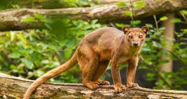
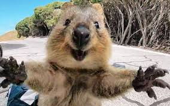
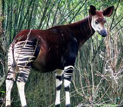
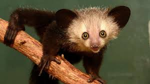
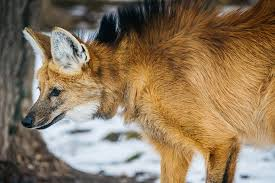
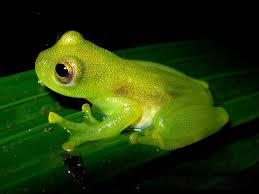

The axolotl is a rare Mexican salamander known for its external gills and remarkable ability to regenerate limbs. Unlike most amphibians, it remains aquatic and retains its larval features into adulthood—a condition called neoteny. Found only in Lake Xochimilco, this smiling creature has become a symbol of conservation due to habitat loss and pollution, and it's popular in research for its regenerative abilities.

Native to Madagascar, the fossa is a cat-like predator related to the mongoose. Agile and muscular, it can climb trees with ease, hunting lemurs and small mammals. It has retractable claws and sharp teeth, making it the island’s top carnivore. Though elusive, the fossa plays a crucial role in Madagascar's ecosystem. Its numbers are declining due to deforestation and habitat fragmentation.

Often dubbed the “world’s happiest animal” for its cheeky grin, the quokka is a small marsupial found on Rottnest Island in Australia. Nocturnal and herbivorous, it thrives in shrubland habitats. Quokkas are friendly but vulnerable to predators like foxes and cats. Despite their cuteness, handling or feeding them is illegal. Their cheerful appearance has made them social media darlings, sparking conservation interest.Covered in protective keratin scales, the pangolin is the world’s only truly scaly mammal. Native to Asia and Africa, it eats ants and termites using a long sticky tongue. When threatened, it curls into a ball. Unfortunately, pangolins are critically endangered due to illegal wildlife trade and habitat destruction. Their meat and scales are highly sought after in traditional medicine, making them the most trafficked mammal globally.

Often called the “forest giraffe,” the okapi is a rare mammal native to the rainforests of the Democratic Republic of Congo. With zebra-like stripes on its hind legs and a giraffe-like body, it is shy and elusive. It uses its long, blue tongue to strip leaves from trees. Despite its giraffe relation, the okapi was unknown to science until the early 20th century.

The aye-aye is a nocturnal lemur from Madagascar, known for its eerie appearance and unique foraging behavior. It uses a long, skeletal middle finger to tap on wood and extract insects, similar to a woodpecker. With large eyes and bat-like ears, it has adapted perfectly for night hunting. Local folklore often associates it with bad luck, contributing to its threatened status due to human persecution.

The maned wolf, native to South America, resembles a red fox on stilts due to its long legs and reddish fur. Despite its appearance, it’s neither a fox nor a wolf. It’s a solitary omnivore, feeding on small mammals, fruits, and plants like the wolf apple. Its high-pitched roar-bark is used for communication. Habitat loss and road fatalities are major threats to this enigmatic creature.

Glass frogs are small, arboreal amphibians native to Central and South America. Their translucent skin reveals internal organs, including a beating heart, giving them their name. They dwell in tropical rainforests near streams, where they lay eggs on leaves. These frogs are sensitive to environmental changes and deforestation. Their unique see-through appearance and delicate beauty make them a fascination among biologists and nature lovers alike.